Supplement the data fitted to a linear model with model fit statistics.
If you have missing values in your model data, you may need to refit
the model with na.action = na.exclude.
# S3 method for lm fortify(model, data = model$model, ...)
Arguments
- model
linear model
- data
data set, defaults to data used to fit model
- ...
not used by this method
Value
The original data with extra columns:
Examples
#> mpg wt .hat .sigma .cooksd .fitted #> Mazda RX4 21.0 2.620 0.04326896 3.067494 1.327407e-02 23.28261 #> Mazda RX4 Wag 21.0 2.875 0.03519677 3.093068 1.723963e-03 21.91977 #> Datsun 710 22.8 2.320 0.05837573 3.072127 1.543937e-02 24.88595 #> Hornet 4 Drive 21.4 3.215 0.03125017 3.088268 3.020558e-03 20.10265 #> Hornet Sportabout 18.7 3.440 0.03292182 3.097722 7.599578e-05 18.90014 #> Valiant 18.1 3.460 0.03323551 3.095184 9.210650e-04 18.79325 #> .resid .stdresid #> Mazda RX4 -2.2826106 -0.76616765 #> Mazda RX4 Wag -0.9197704 -0.30743051 #> Datsun 710 -2.0859521 -0.70575249 #> Hornet 4 Drive 1.2973499 0.43275114 #> Hornet Sportabout -0.2001440 -0.06681879 #> Valiant -0.6932545 -0.23148309#> mpg cyl disp hp drat wt qsec vs am gear carb .hat #> Mazda RX4 21.0 6 160 110 3.90 2.620 16.46 0 1 4 4 0.04326896 #> Mazda RX4 Wag 21.0 6 160 110 3.90 2.875 17.02 0 1 4 4 0.03519677 #> Datsun 710 22.8 4 108 93 3.85 2.320 18.61 1 1 4 1 0.05837573 #> Hornet 4 Drive 21.4 6 258 110 3.08 3.215 19.44 1 0 3 1 0.03125017 #> Hornet Sportabout 18.7 8 360 175 3.15 3.440 17.02 0 0 3 2 0.03292182 #> Valiant 18.1 6 225 105 2.76 3.460 20.22 1 0 3 1 0.03323551 #> .sigma .cooksd .fitted .resid .stdresid #> Mazda RX4 3.067494 1.327407e-02 23.28261 -2.2826106 -0.76616765 #> Mazda RX4 Wag 3.093068 1.723963e-03 21.91977 -0.9197704 -0.30743051 #> Datsun 710 3.072127 1.543937e-02 24.88595 -2.0859521 -0.70575249 #> Hornet 4 Drive 3.088268 3.020558e-03 20.10265 1.2973499 0.43275114 #> Hornet Sportabout 3.097722 7.599578e-05 18.90014 -0.2001440 -0.06681879 #> Valiant 3.095184 9.210650e-04 18.79325 -0.6932545 -0.23148309plot(mod, which = 1)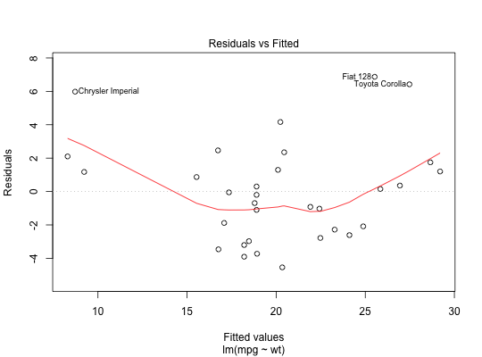ggplot(mod, aes(.fitted, .resid)) + geom_point() + geom_hline(yintercept = 0) + geom_smooth(se = FALSE)#>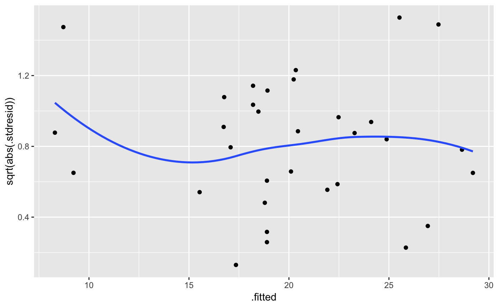ggplot(mod, aes(.fitted, .stdresid)) + geom_point() + geom_hline(yintercept = 0) + geom_smooth(se = FALSE)#>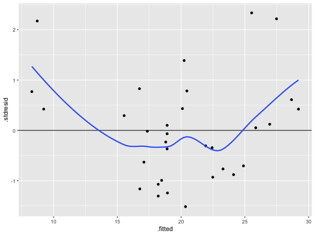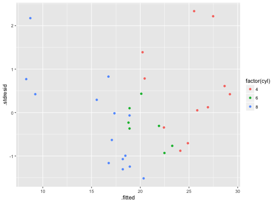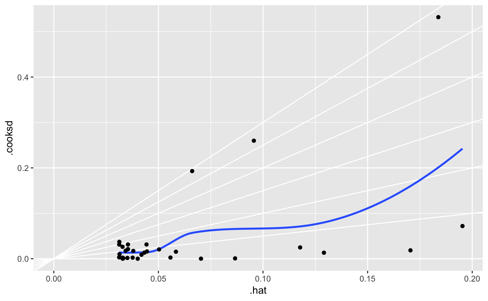plot(mod, which = 2)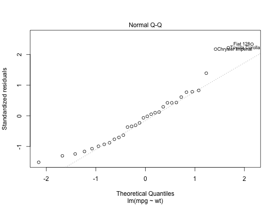plot(mod, which = 3)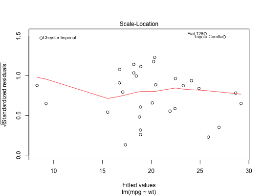#>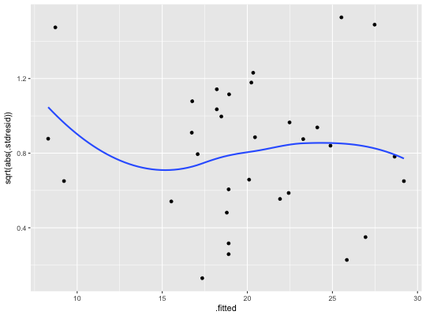plot(mod, which = 4)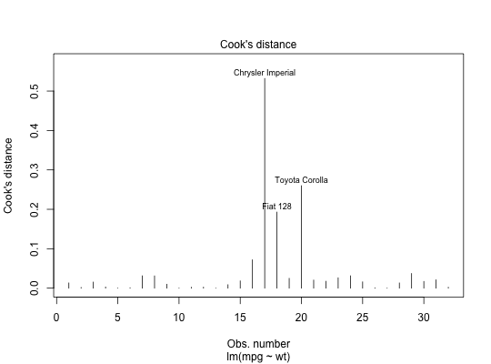plot(mod, which = 5)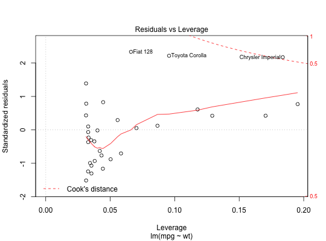ggplot(mod, aes(.hat, .stdresid)) + geom_vline(size = 2, colour = "white", xintercept = 0) + geom_hline(size = 2, colour = "white", yintercept = 0) + geom_point() + geom_smooth(se = FALSE)#>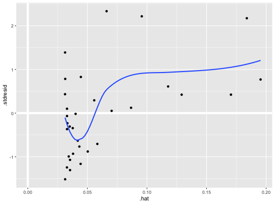ggplot(mod, aes(.hat, .stdresid)) + geom_point(aes(size = .cooksd)) + geom_smooth(se = FALSE, size = 0.5)#>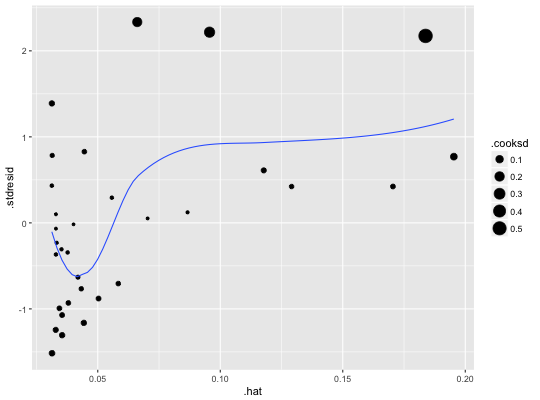plot(mod, which = 6)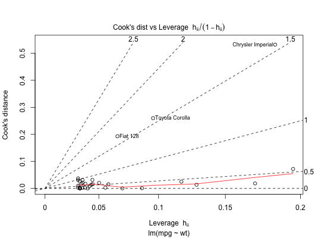ggplot(mod, aes(.hat, .cooksd)) + geom_vline(xintercept = 0, colour = NA) + geom_abline(slope = seq(0, 3, by = 0.5), colour = "white") + geom_smooth(se = FALSE) + geom_point()#>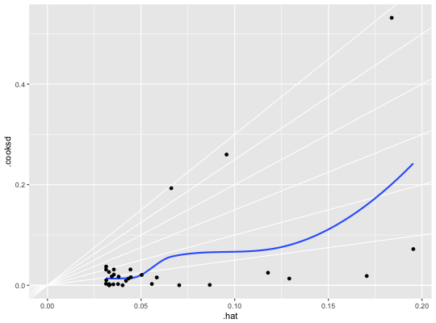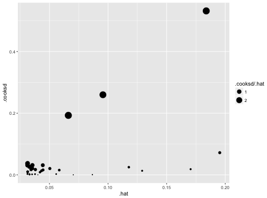